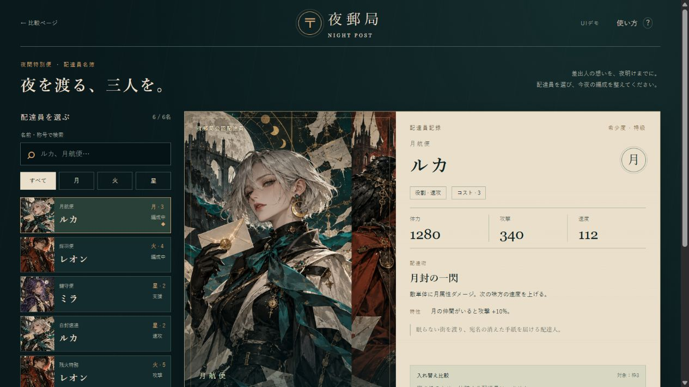
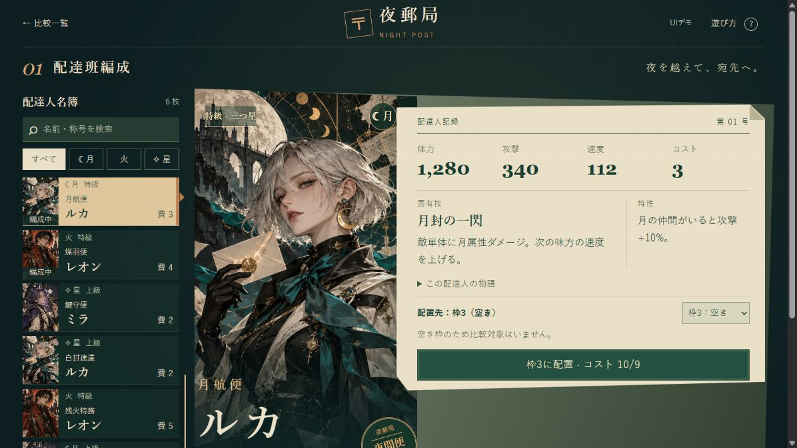

夜郵局 — カード編成UIの比較
新版：選択→比較→配置の体験を作り直しました。
前版・スキル未使用版はそのまま保存。新版は人物を独立した透過素材にし、背景・構図・状態の切り替え・配置演出を再設計しています。
以前の比較記録
同じ6枚のカード、同じ人物画、同じ編成ルールから作った2つの画面です。装飾と情報を持たせたまま、人物・選択肢・判断材料をどうまとめるかを試しています。
試す操作：空いている3枠目に「ミラ・鍵守便」を入れ、コスト9以内で編成を確定する。ほかのカードへの入れ替えや、ヘルプから戻る動作も確認できます。
スキル未使用版


改訂スキル版



改訂版で組み直した点
- 人物画と大きな名前を主役にし、能力の紙面を重ねて一つのまとまりにしました。
- PCでは編成枠と確定を下部の一列へ集約。1440×1000で主要操作が同時に見えます。
- 狭幅では詳細のそばで配達人と配置先を変更できます。物語は開閉、ルールは遊び方へ分けています。
背景の描き込みを消すことではなく、主な内容の位置・大きさ・まとまりの関係で余白を考えています。
比較の条件
会話履歴を共有しない別エージェントへ、同じ依頼文・データ・生成画像を渡しました。未使用版はスキル本文を読みません。適用版は改訂UIUX-controlとUX・構図の参照資料を読みます。どちらも最初は実装1回と構文確認で制作し、適用版は初稿で編成欄が画面外になる問題が見つかり、構図と文字サイズを1回再設計しました。未使用版は初稿を保持しています。
人物画は両版共通のAI生成素材です。完成度には素材・モデルの既有知識・共通指示・実装上の判断も影響します。各1例の比較であり、スキル単独の効果や、人間の操作時間・好みを実証したものではありません。